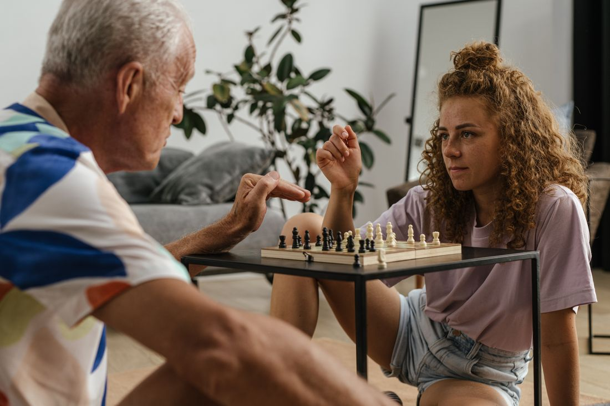
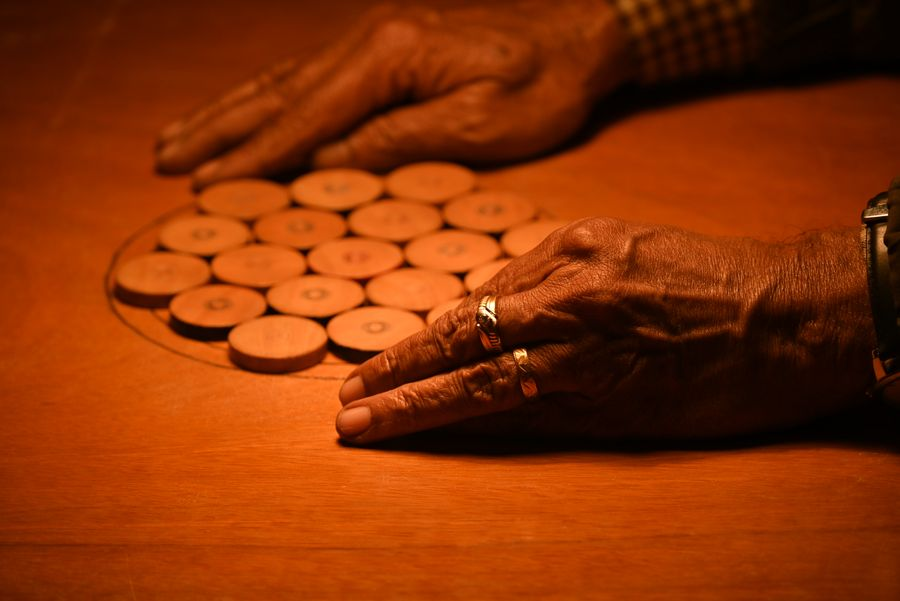

午前
お茶とおしゃべり
着いたらお茶を一杯。近況を話したり、ゆっくり新聞を読んだり。
気持ちが落ち着く朝の時間
地域で過ごす、高齢者の日中の居場所
お茶を飲んで、話をして、好きなことをする一日。ご本人のペースで通える場所を、ご家族や地域の方と一緒につくります。
その日にやりたいことを選びながら過ごします。ご本人の希望や体調に合わせ、休憩の時間も取ります。

着いたらお茶を一杯。近況を話したり、ゆっくり新聞を読んだり。
気持ちが落ち着く朝の時間
昼食のあとは、それぞれのペースで休みます。
食事に関する相談可
ボードゲームや手仕事など、その日の気分で選べる時間。
お好きな活動に参加初回は、普段の暮らしや希望される曜日、移動の手段などを伺います。見学は活動の様子を見てから、ゆっくりご検討ください。
いまの暮らしと、かよいたい曜日や頻度をお聞きします。
居場所の様子をご覧いただき、ご本人に合う過ごし方を相談します。
受け入れ状況、送迎、必要な支援や連携を個別に確認します。
ご家族だけの見学にも対応する想定です。
食事や送迎の希望は、見学前に利用条件と合わせてご相談いただく設定です。